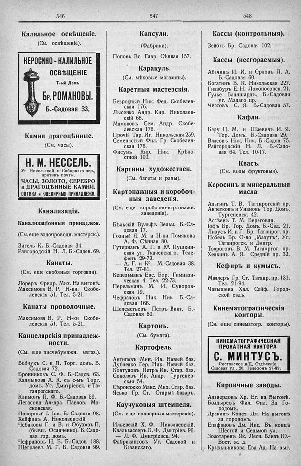

Лист источника 314
Скан

Распознанный текст
546
Калильное освѣщеніе.
(См. освѣщеніе).
КЕРОСИНО-КАЛИЛЬНОЕ
ОСВѢЩЕНІЕ
Т-ый Домъ
Бр. РОМАНОВЫ.
Б.-Садовая 33.
Камни драгоцѣнные.
(См. часы).
Н. М. НЕССЕЛЬ.
Уг. Никольской и Соборнаго пер.,
противъ почты.
ЧАСЫ, ЗОЛОТО, СЕРЕБРО
и ДРАГОЦѢННЫЕ КАМНИ.
ОПТИКА и ЮВЕЛИРНЫЯ ПРИНАДЛЕЖН.
Канализація.
Канализаціонныя принадлѳж.
(См. еще водопроводн. мастерск.).
Зигель К. Б.-Садовая 34.
Райгородскій Н. Л. Б.-Садов. 69.
Канаты.
(См. еще скобяныя торговли).
Лореръ Фридр. Мих. На выгонѣ.
Максимова В. Р. Н-ки. Скобе-
левская 51. Тел. 5-21.
Канаты проволочные.
Максимова В. Р. Н-ки Скобе-
левская 51. Тел. 5-21.
Канцелярскія принадлеж-
ности.
(См. еще писчебумажн. магаз.).
Бебчукъ С. и П. Торг. домъ. Б.
Садовая 72.
Бронниковъ С. Ф. Б.-Садов. 63.
Калмыкова А. К. съ с-мъ Торг.
домъ. Уг. Дмитріевск. и Та-
ганрогскаго.
Климовъ П. Ф. Б.-Садовая 59.
Легасова Ал-дра Павлов. Мо-
сковская.
Покорный І. Іос. Б. Садовая 98.
Хейфицъ А. Николаевскій.
Чебаковы Г. и В. и Обуховъ П.
(бывш. Осадченко). Б. Садо-
вая гор. домъ.
Чефрановъ Н. Б. Б.-Садов. 188.
Щеголевъ М. Г. Б. Садовая 99.
547
Капсули.
(Фабрики).
Поповъ Вс. Гавр. Сѣнная 157.
Каракуль.
(См. мѣховые магазины).
Каретныя мастерскія.
Безродный Ник. Фед. Скобелев-
ская 176.
Лысенко Андр. Кир. Николаев-
скій 66.
Мамоновъ Сем. Андр. Скобе-
левская 176.
Прочій Тар. Иг. Никольская 259.
Семенистый Фил. Гр. Скобелев-
ская 176.
Фисунъ Кир. Ник. Крѣпо-
стной 100.
Картины художествен.
(См. багеты и рамы).
Картонажныя и коробоч-
ныя заведенія.
(См. еще коробочно-картонажн.
заведенія).
Бѣльскій Вульфъ Зельм. Б.-Са-
довая 17.
Гозный Я. М. и Н-ки Помякова
А. Ф. Сѣнная 80.
Гутерманъ А. Г. и К⁰. Пушкин-
ская уг. Ткачевскаго. Теле-
фонъ 29-73.
— А. Г. и К⁰. М.-Садовая 38.
Тел. 27-81.
Кецельманъ Евс. Бор. Гимнази-
ческая 4. Тел. 22-73.
Перельманъ М. И. Суворов-
ская 19.
Чефрановъ Ник. Ник. Б.-Са-
довая 166.
Шелеметьевъ Петръ Викт. Б.-
Садовая 60.
Картонъ.
(См. бумага).
Картофель.
Антиповъ Мин. Ив. Новый баз.
Дубченко Гер. Ник. Новый баз.
Ковтуновъ Петръ Ив. Стар. баз.
Соколовъ Ив. Андр. Тургенев-
ская 54.
Сѣроножко Макс. Мих. Стар. баз.
Ясько Гр. Ст. Старый базаръ.
Каучуковыя штемпеля.
(См. еще граверныя мастерскія).
Ильевскій Х. Ф. Николаевскій.
Квальвассеръ Б. Ф. Дмитріев. 96.
— Л. Ф. Дмитріевск. 94.
Фабрикантовъ Уг. Садовой и
Казанскаго.
548
Кассы (контрольныя).
Зейбтъ Бр. Садовая 102.
Кассы (несгораемыя).
Абачинъ И. И. и Орловъ П. А.
Б.-Садовая 60.
Богатинъ В. К. Никольская 227.
Гинзбургъ Е. Н. Ломоносовск. 21.
Гулье Бланшардъ. Б.-Садовая
уг. Малаго пр.
Чертовъ С. Я. Б.-Садовая 57.
Кафли.
Бару Ц. М. и Шаевичъ И. Я.
Тор. Домъ. Б.-Садовая 29.
Власовъ Ник. Ник. Б.-Садов. 75.
Райгородскій Н. Л. Б.-Садо-
вая 64. Тел. 10-17.
Квасъ.
(См. воды фруктовыя).
Керосинъ и минеральныя
масла.
Альгинъ Т. В. Таганрогскій пр.
Анпетковъ и Унановъ Тор. Домъ.
Тургеневск. 42.
Ассѣевъ Т. М. Береговая.
Іофъ Бр. Тор. Домъ. Б.-Сад. 21.
Ливусъ И. и Г. Бр. Таганрог. пр.
Нобель Бр. О-во „Мазутъ“. Уг.
Таганрогск. и Дмитр.
Твороговъ В. М. Таганрог. пр.
Хенкинъ А. Я. Средній пр. 32.
Кефиръ и кумысъ.
Маллеръ Гр. Ст. Таганр. пр. 131.
Тел. 21-94.
Чанышева Хал. Сейф. Город-
ской садъ.
Кинематографическія
конторы.
(См. еще синематогр. конторы).
КИНЕМАТОГРАФИЧЕСКАЯ
ПРОКАТНАЯ КОНТОРА
С. МИНТУСЪ.
Ростовское н/Д. Отдѣленіе
Садовая ул., 20. Телефонъ 27-82.
Кирпичные заводы.
Алавердовъ Хр. Ег. на Выгонѣ.
Болдыревъ Фил. Фил. За Го-
родомъ.
Дракинъ Конст. Дм. На выгонѣ
за городомъ.
Епифановъ Дм. Ник. Въ концѣ
Шестой и Седьмой ул.
Золотаревъ Як. Леон. Близъ Ю.-
Вост. ж. д.
Красильникова Ева Ад. На выг.